We now want to perform some EDA to get a better understanding of our data, which will hopefully give us a good sense of what kind of data would be beneficial for us to consider in our model.
6.3 EDA
Let’s first look at investigating any trends between play factors and run success.
First considering the distribution by play direction:
Code
runs |>group_by(rush_location_type) |>summarize(success_rate =mean(successful_run, na.rm=TRUE)) |>ggplot(aes(rush_location_type, success_rate, fill = rush_location_type)) +geom_col(fill ="#D50A0A") +geom_label(aes(label =round(success_rate,4)), fill ="white") +labs(title="Run Success Rate by Direction") +theme_minimal(base_size =15)
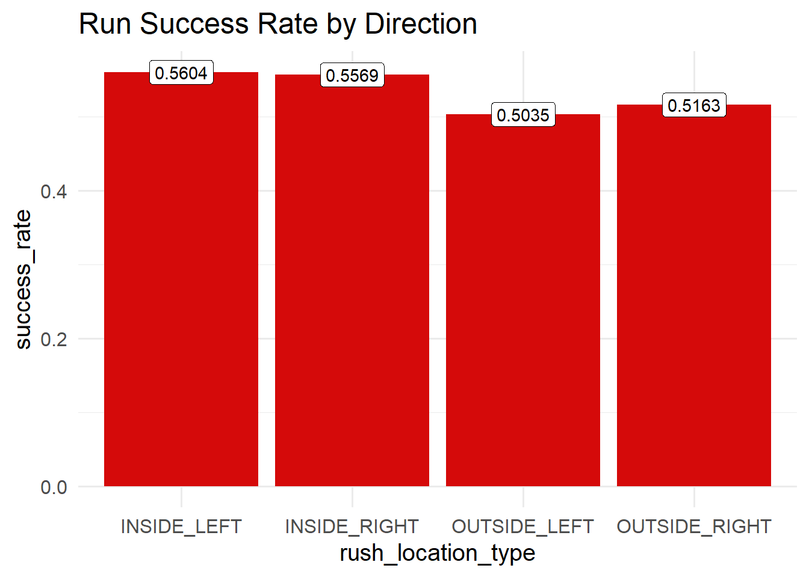
Interestingly we see that inside runs have a higher success rate. If we think about why this may be, if we think about play calling tendencies, inside runs may be more called upon when close to the 10-yard line, which also means that the requirement for a successful run requires less yards.
Next considering play formations and success:
Code
runs |>group_by(offense_formation) |>summarize(success_rate =mean(successful_run, na.rm=TRUE), n =n()) |>filter(n >10) |>ggplot(aes(x =reorder(offense_formation, success_rate), y = success_rate)) +geom_col(fill ="#D50A0A") +geom_label(aes(label =round(success_rate, 3)), fill ="white") +coord_flip() +labs(title ="Success Rate by Offensive Formation", x ="Formation", y ="Success Rate") +theme_minimal(base_size =15)
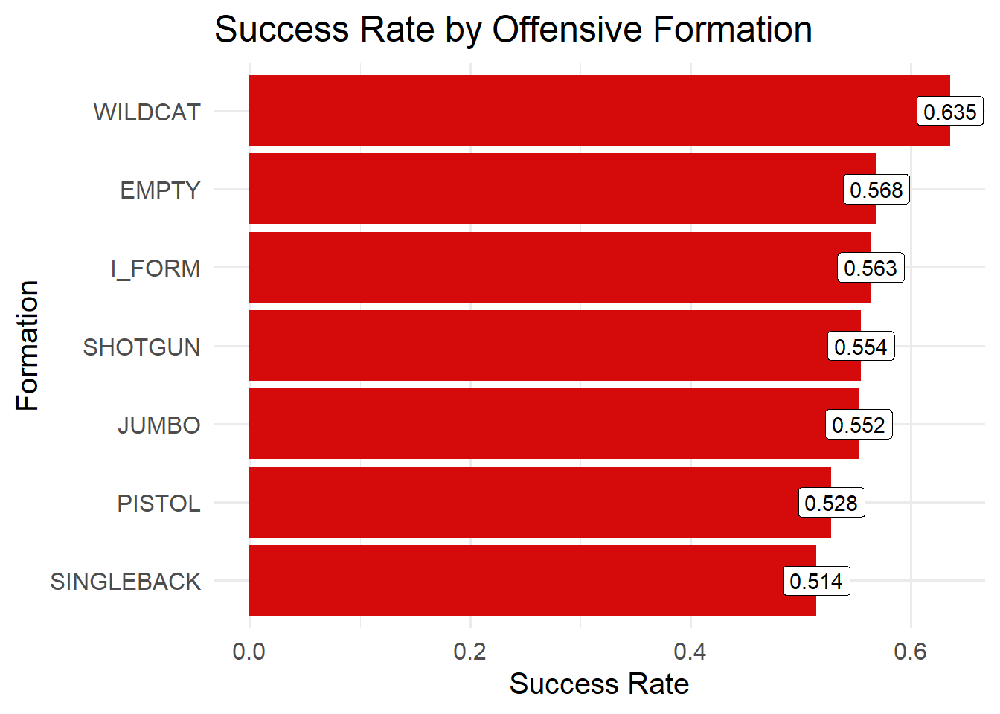
Here it is quite interesting to see that besides Wildcat formation, we have success rates within the same range of ~.51-.57. It would be interesting to see what the avg yards to go for each formation is:
Code
runs |>group_by(offense_formation) |>summarise(avg_yards_to_go =mean(yards_to_go, na.rm =TRUE),count =n() ) |>arrange(desc(avg_yards_to_go)) |>gt() |>fmt_number(columns = avg_yards_to_go,decimals =2 ) |>cols_label(offense_formation ="Offense Formation",avg_yards_to_go ="Avg Yards to Go",count ="Number of Plays" ) |>tab_header(title ="Average Yards to Go by Offense Formation" )
Average Yards to Go by Offense Formation
Offense Formation
Avg Yards to Go
Number of Plays
EMPTY
8.21
95
SHOTGUN
8.12
2506
PISTOL
7.91
432
SINGLEBACK
7.91
2662
I_FORM
7.74
749
WILDCAT
6.05
74
JUMBO
4.44
105
This is definitely worth considering. We observe that wildcat, and empty are called infrequently in comparison to many other formations.
Next looking at how the player may affect success rate:
Intuitively we see with less attempts we see higher success Rates among the highest used runners. The exception here being Derrick Henry who was arguably the best RB in 2021.
Now we would like to consider more situation based results:
Code
runs |>mutate(field_zone =case_when( absolute_yardline_number <=20~"Own Red Zone", absolute_yardline_number >=80~"Opp Red Zone",TRUE~"Field" )) |>group_by(field_zone) |>summarize(success_rate =mean(successful_run, na.rm=TRUE),avg_yards =mean(yards_gained, na.rm=TRUE),n =n() ) |>ggplot(aes(field_zone, success_rate, fill = field_zone)) +geom_col(fill ="#D50A0A") +geom_label(aes(label =round(success_rate, 3)), fill ="white") +labs(title="Run Success Rate by Field Zone", x ="Field Zone", y ="Success Rate") +theme_minimal(base_size =15)
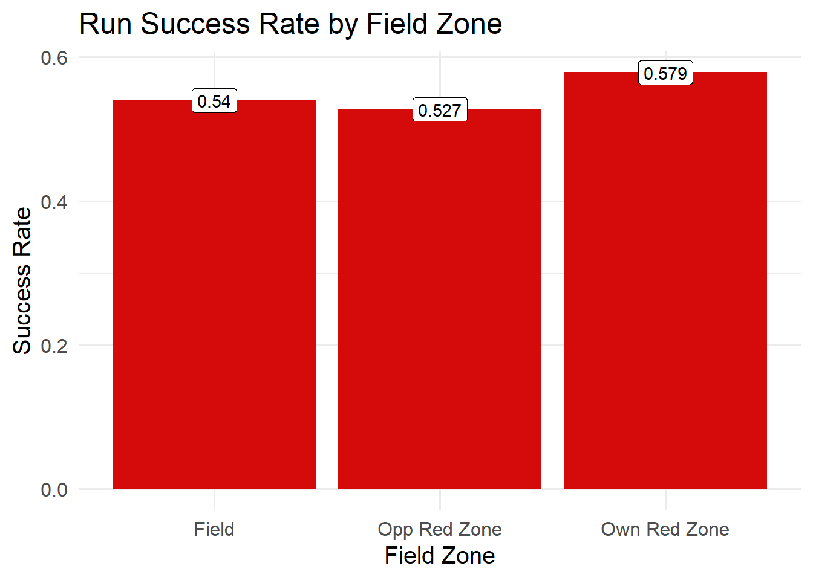
In each section of the field we see pretty consistent run success, though there is a bit more success when a team is in their own red zone.
We next explore if teams have any tendencies with run location and their respective success:
From this we see teams like Buffalo and Baltimore have exceptional inside right run success. Indiana and Seattle have very low success rates for outside left runs.
If we consider the down, we observe the following:
Code
runs |>group_by(down) |>summarize(success_rate =mean(successful_run, na.rm=TRUE), attempts =n()) |>ggplot(aes(x =as.factor(down), y = success_rate, fill =as.factor(down))) +geom_col(width =0.7, color ="#ffffff") +geom_label(aes(label =round(success_rate, 3)), fill ="white") +scale_fill_manual(values =rep("#D50A0A", 4)) +labs(title ="Success Rate by Down", x ="Down", y ="Success Rate") +theme_minimal(base_size =15) +theme(panel.grid.major =element_line(color ="grey50"),panel.grid.minor =element_line(color ="grey60"),legend.position ="none" )
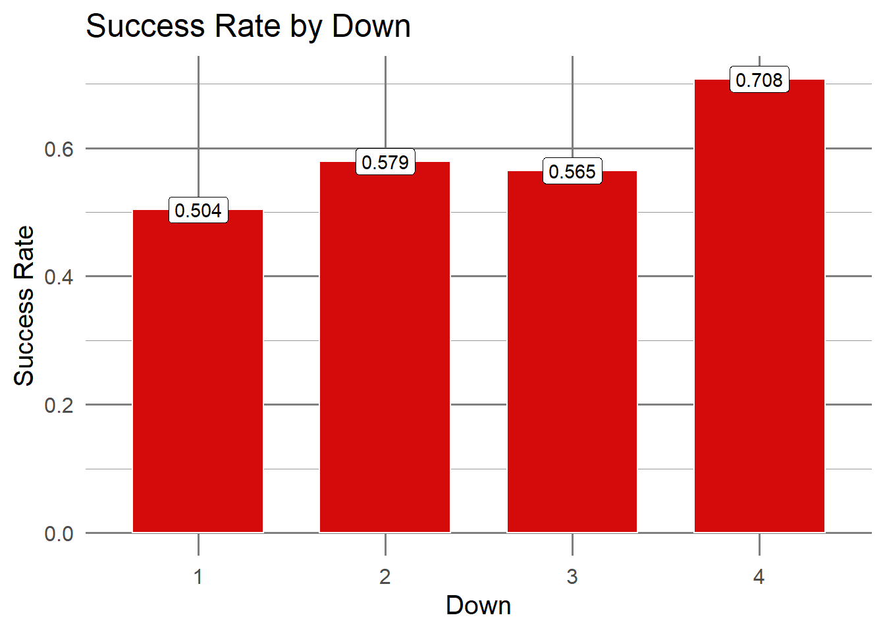
We note that success seems to increase from first to fourth down.
Yards to go would also be a feature worth assessing:
Code
ggplot(runs, aes(x = yards_to_go, fill =as.factor(successful_run))) +geom_histogram(position ="dodge",bins =15,alpha =0.95,color ="black" ) +scale_fill_manual(values =c("#D50A0A", "#2E8B57"),labels =c("No", "Yes") ) +labs(title ="Yards to Go by Run Success",x ="Yards to Go",y ="Play Count",fill ="Successful Run" ) +theme_minimal(base_size =15) +theme(panel.grid.major =element_line(color ="grey50"),panel.grid.minor =element_line(color ="grey60") )
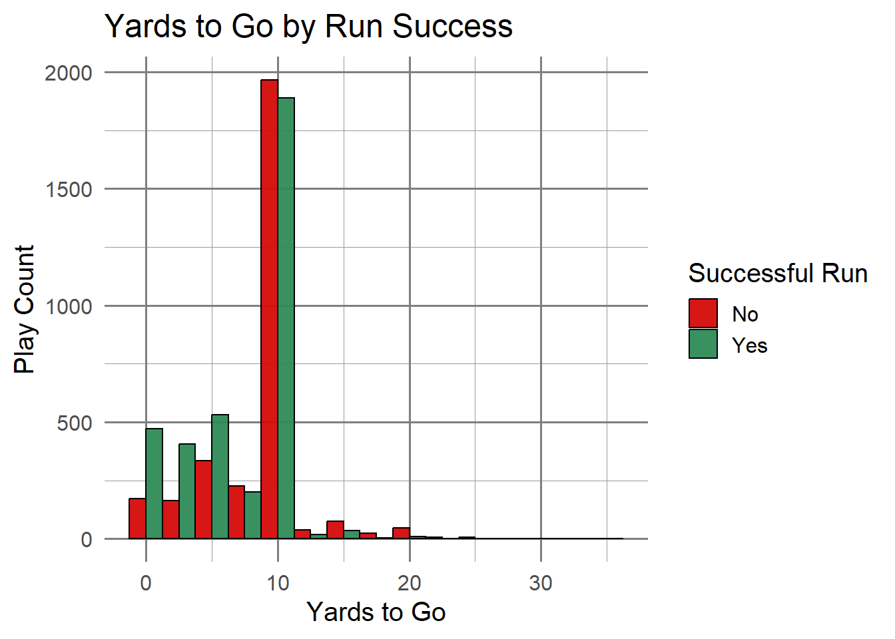
Intuitively, as yards to go increases, the observed amount of successful runs decrease.
If we consider the absolute yard line:
Code
runs |>ggplot(aes(x = absolute_yardline_number, y =as.numeric(successful_run))) +geom_smooth(color ="#D50A0A", fill ="#D50A0A", alpha =0.15, linewidth =1.4) +labs(title ="Run Success Probability vs. Yardline",x ="Yardline",y ="Pr(Successful Run)" ) +theme_minimal(base_size =15) +theme(panel.grid.major =element_line(color ="grey50"),panel.grid.minor =element_line(color ="grey60") )
`geom_smooth()` using method = 'gam' and formula = 'y ~ s(x, bs = "cs")'
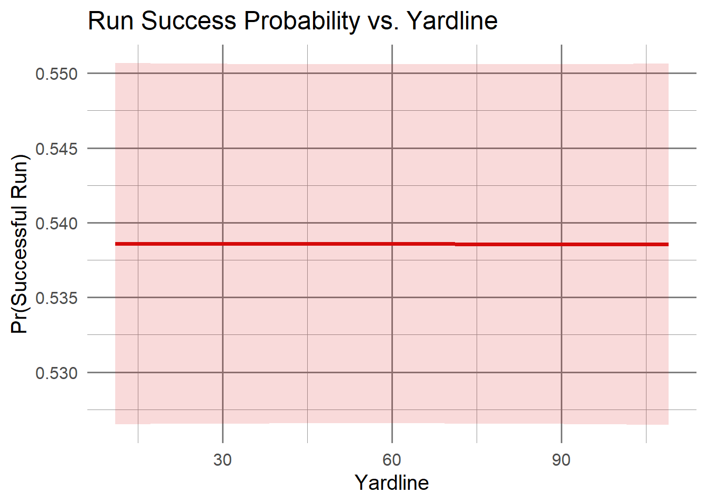
This seems quite consistent so this may not be the most beneficial to our analysis.
What about expected points:
Code
runs |>ggplot(aes(x = expected_points, y =as.numeric(successful_run))) +geom_smooth(color ="#D50A0A", fill ="#D50A0A", alpha =0.15, linewidth =1.4) +labs(title ="Run Success Probability by Expected Points Added",x ="Expected Points",y ="Pr(Successful Run)" ) +theme_minimal(base_size =15) +theme(panel.grid.major =element_line(color ="grey50"),panel.grid.minor =element_line(color ="grey60") )
`geom_smooth()` using method = 'gam' and formula = 'y ~ s(x, bs = "cs")'
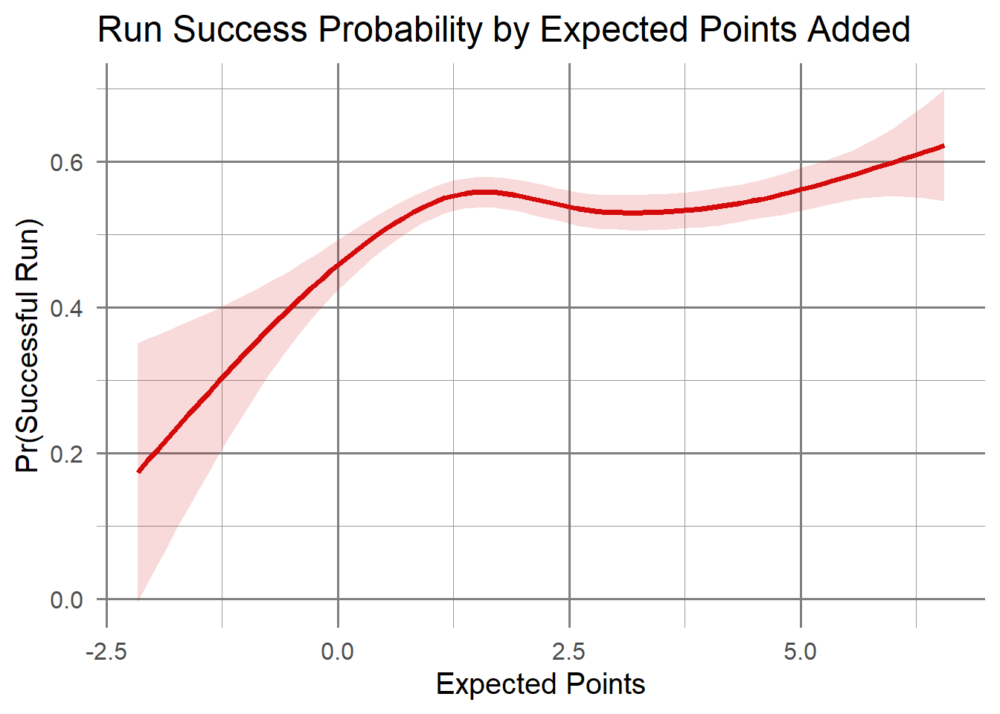
From this we see that the expected points from a play typically have a higher probability of success as the expected points increase.
Finally if we explore score differential, but we need to do a little more work with our data first.
run_plays |>ggplot(aes(x = score_diff, y =as.numeric(successful_run))) +geom_smooth(color ="#D50A0A", fill ="#D50A0A", alpha =0.15, linewidth =1.4) +labs(title ="Success Rate by Score Differential",x ="Score Differential (O - D)",y ="Pr(Successful Run)" ) +theme_minimal(base_size =15) +theme(panel.grid.major =element_line(color ="grey50"),panel.grid.minor =element_line(color ="grey60") )
`geom_smooth()` using method = 'gam' and formula = 'y ~ s(x, bs = "cs")'
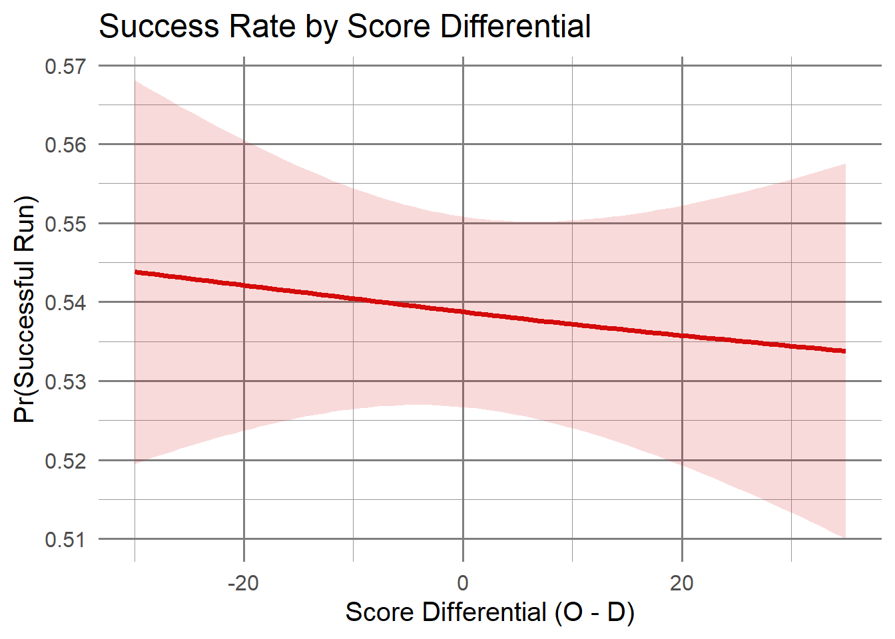
We notice a relatively consistent negative linear trend, though it’s a small slope.
With some of these features, I’d like to look at the relationship bewteen the features.
Code
run_plays |>ggplot(aes(x = yards_to_go, y = expected_points)) +geom_point(alpha =0.35, color ="#D50A0A") +geom_smooth(method ="lm", color ="#013369", fill ="#013369", alpha =0.08) +labs(title ="Yards to Go vs Expected Points",x ="Yards to Go", y ="Expected Points") +theme_minimal(base_size =15) +theme(panel.grid.major =element_line(color ="grey50"),panel.grid.minor =element_line(color ="grey60") )
`geom_smooth()` using formula = 'y ~ x'
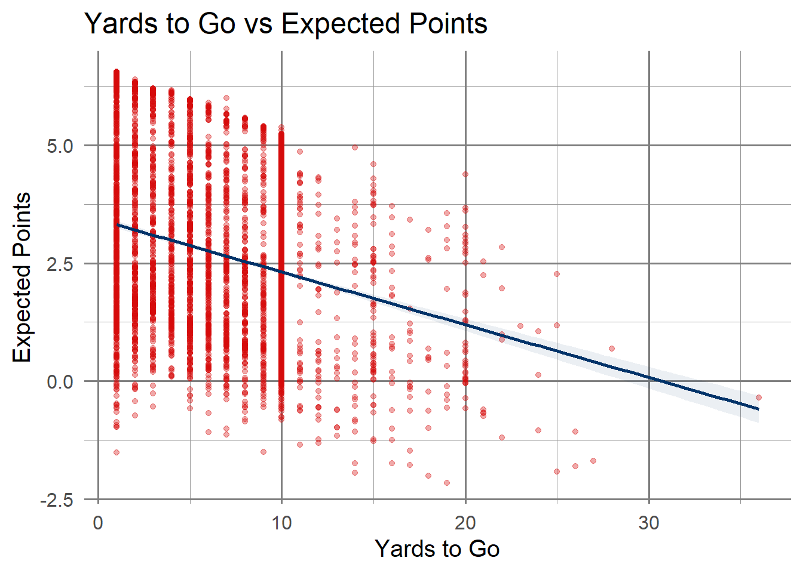
Code
run_plays |>ggplot(aes(x = offense_formation, y = yards_to_go, fill = offense_formation)) +geom_boxplot(alpha =0.8, color ="#013369") +scale_fill_manual(values =rep("#D50A0A", length(unique(run_plays$offense_formation)))) +coord_flip() +labs(title ="Yards to Go by Offensive Formation", x ="Formation", y ="Yards to Go") +theme_minimal(base_size =15) +theme(panel.grid.major =element_line(color ="grey50"),panel.grid.minor =element_line(color ="grey60"),legend.position ="none" )
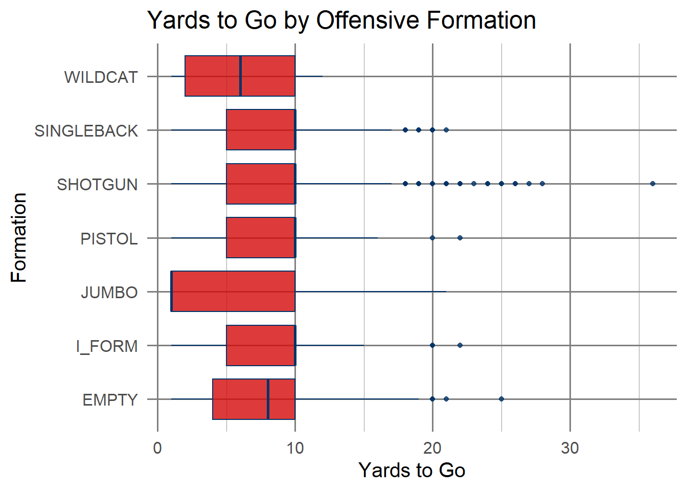
Code
run_plays |>ggplot(aes(x = rush_location_type, y = expected_points, fill = rush_location_type)) +geom_boxplot(alpha =0.8, color ="#013369") +scale_fill_manual(values =rep("#D50A0A", length(unique(run_plays$rush_location_type)))) +coord_flip() +labs(title ="Expected Points by Rush Location", x ="Rush Location", y ="Expected Points") +theme_minimal(base_size =15) +theme(panel.grid.major =element_line(color ="grey50"),panel.grid.minor =element_line(color ="grey60"),legend.position ="none" )
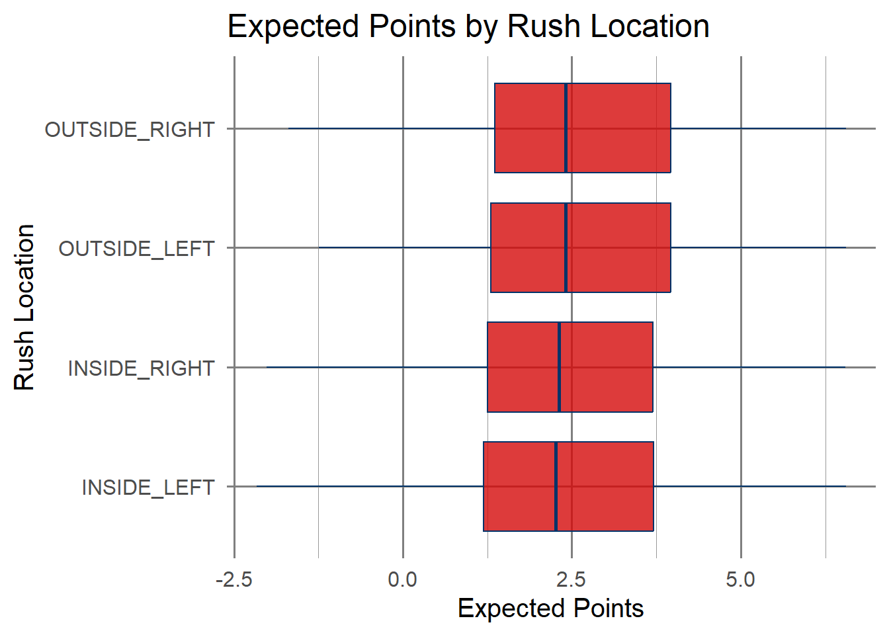
Code
run_plays |>count(offense_formation, pff_run_concept_primary) |>ggplot(aes(x = offense_formation, y = pff_run_concept_primary, fill = n)) +geom_tile(color ="#013369") +scale_fill_gradient(low ="#013369", high ="#D50A0A") +labs(title ="Play Volume: Formation vs Run Concept", x ="Formation", y ="Run Concept") +theme_minimal(base_size =13) +theme(axis.text.x =element_text(angle =45, hjust =1),panel.grid =element_blank() )
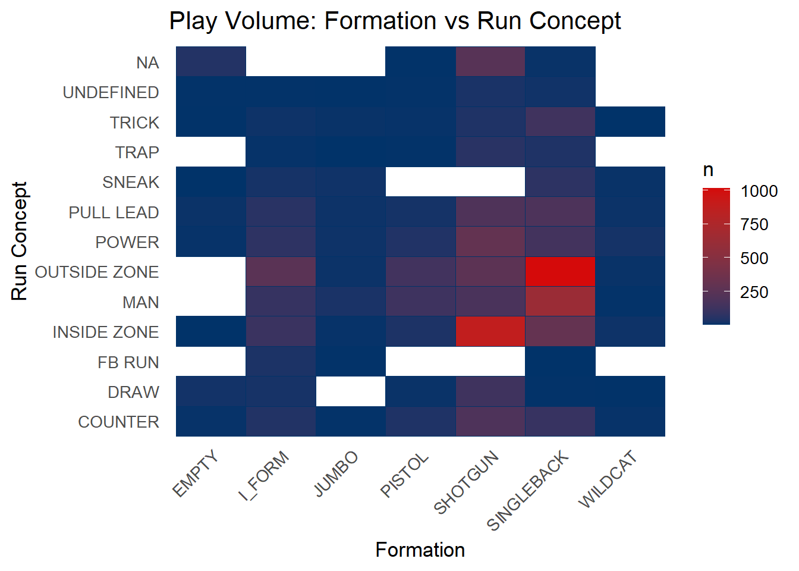
We can take this up a notch by faceting to evaluate more complex relationships:
Code
run_plays |>ggplot(aes(x = yards_to_go, y = expected_points)) +geom_point(alpha =0.35, color ="#D50A0A") +geom_smooth(method ="lm", color ="#013369", fill ="#013369", alpha =0.08) +facet_wrap(~ down) +labs(title ="Yards to Go vs Expected Points by Down",x ="Yards to Go",y ="Expected Points" ) +theme_minimal(base_size =15) +theme(panel.grid.major =element_line(color ="grey50"),panel.grid.minor =element_line(color ="grey60") )
`geom_smooth()` using formula = 'y ~ x'
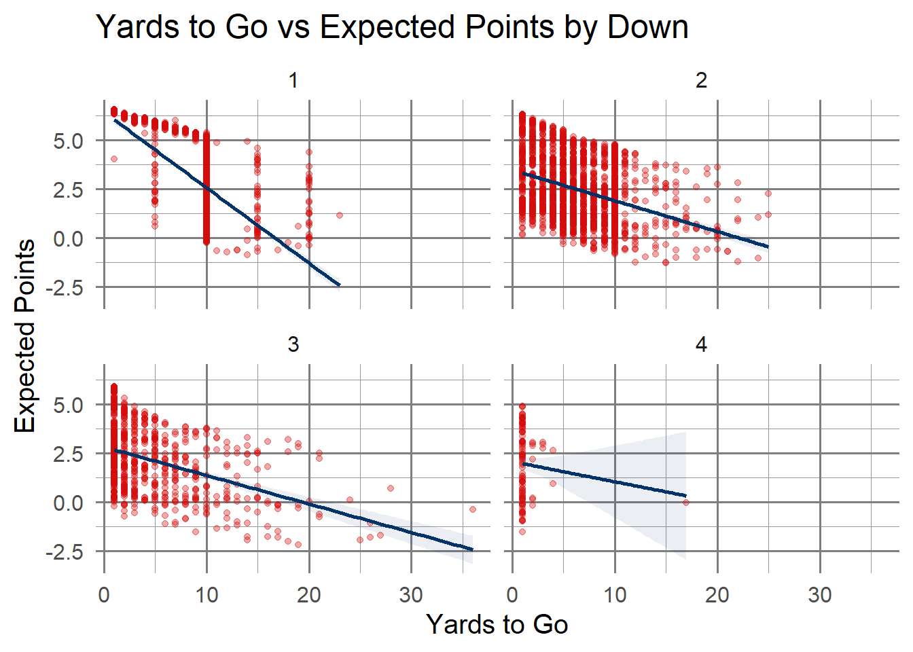
Code
run_plays |>ggplot(aes(x = offense_formation, y = yards_to_go, fill = offense_formation)) +geom_boxplot(alpha =0.8, color ="#013369") +coord_flip() +facet_wrap(~ down) +scale_fill_manual(values =rep("#D50A0A", length(unique(run_plays$offense_formation)))) +labs(title ="Yards to Go by Formation and Down",x ="Formation",y ="Yards to Go" ) +theme_minimal(base_size =15) +theme(panel.grid.major =element_line(color ="grey50"),panel.grid.minor =element_line(color ="grey60"),legend.position ="none" )
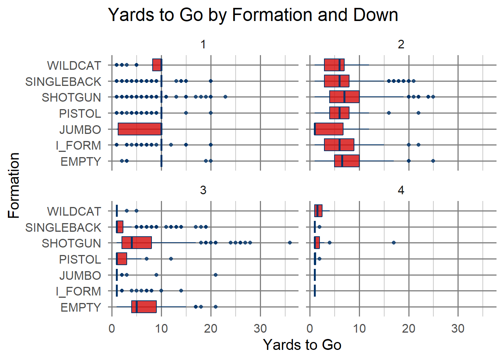
6.4 Takeaways
We have seen quite a few features that can be of interest from exploring some of our data. Based on what we’ve seen so far, we can have a better idea of what we can do for our model.